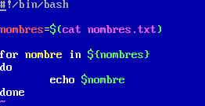
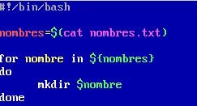

Imprimir los dias de la semana, cogiendolos de una lista en el for
Imprimir los numeros del 0 al 9

Imprimir los nombres leidos de un archivo 
Crear los directorios con los nombres leidos de un archivo 
Crear los usuarios y sus directorios leidos de un archivo

Bucle infinito